Shalat
Shalat secara bahasa berarti do'a. Dengan kata lain, shalat secara bahasa mempunyai arti menggunakan. Sedangkan pegengertian shalat menurut syara' adalah hucapan-ucapan dan perbuatan-perbuatan tertentu, yang dimulai dengan takbiratul ihram dan diakhiri dengan salam.
Firman Allah SWT "Kerjakanlah shalat, sesungguuhnya shalat itu bisa mencegah perbuatan keji dan munkar." QS. Al-Ankabut [29]:45).
"Dan dirikanlah shalat, tunaikan zakat dan rukuklah beserta orang-orang yang rukuk." (QS. Al-Baqarah [2]:43)
Dalam pembahasan kali ini, penulis akan memaparkan tentang syarat wajib dan syara sah shalat, rukun-rukun shalat, yang membatalkan shalat dan cara-cara mendirikan shalat.
-
Syarat Wajib dan Syarat Sah Shalat
Syarat wajib adalah syarat-syarat yang harus ada agar seseorang diwajibkan untuk melaksanakan shalat. Syarat sah adalah syarat-syarat yang harus terpenuhi agar shalat dianggap sah dan diterima oleh Allah. Berikut merupakan syarat wajib dan syarat sah shalat:
- Syarat Wajib:
- Islam
- Suci dari hadas dan najis
- Baligh atau telah cukup umur
- Berakal
- Telah sampai dakwah Rasulullah kepadanya
- Syarat Sah:
- Telah masuk waktu shalat
- Suci dari hadas besar dan hadas kecil
- Suci badan, pakaian dan tempat shalat dari najis
- Menutup aurat
- Menghadap kiblat
- Syarat Wajib:
-
Rukun-rukun Shalat
Rukun-rukun shalat adalah bagian-bagian atau elemen-elemen penting yang harus dilakukan dan tidak boleh diabaikan dalam melaksanakan shalat. Rukun-rukun shalat merupakan bagian inti dari shalat yang harus dipenuhi agar shalat dianggap sah dan diterima oleh Allah. Jika salah satu rukun shalat terlewatkan atau ditinggalkan, maka shalat dianggap tidak sah. Berikut merupakan rukun-rukun shalat:
- Niat
- Berdiri bagi yang mampu
- Takbiratul-Ihraam
- Membaca Al-Fatihah pada tiap-tiap shalat
- Rukuk dengan tumakninah
- I'tidal dengan tumakninah setelah rukuk
- SUjud dengan tumakninah bersamaan beramaan dengan anggota tubuh yang tujuh /i>
- Duduk antara dua sujud dengan tumakninah
- Duduk tasyahud akhir dengan tumakninah
- Membaca tasyahud akhir
- Shalawat untuk nabi Muhammad SAW pada tasyahud akhir
- Salam
- Tertib rukun-rukunnya
-
Yang Membatalkan Shalat
Berikut adalah beberapa hal yang dapat membatalkan shalat:
- Berhadas (kecil atau besar)
- Secara tiba-tiba terkena najis yang tidak diampuni
- Berbicara dengan sengaja yang memberikan pengertian
- Terbukanya aurat dengan sengaja
- Berubah niatnya, seperti tiba-tiba niat keluar dari shalat
- Makan atau minum meskipun sedikit
- Berbuat sesuatu atau bergerak yang banyak secara berturut-turut, seperti melangkah 3 kali dengan sengaja atau tidak.
- Membelakangi kiblat
- Menambah rukun seperti rukuk atau sujud dengan saengaja
- Tertawa terbahak-bahak
- Mendahului imamnya dalam dua rukun berturut-turtu
- Murtad yaitu putus islamnya, sebab ucapan atau perbuatan
-
Bacaan Niat Shalat
Berikut beberapa bacaan niat dalam sholat 5 waktu:
- Bacaan niat shalat Subuh
أُصَلِّى فَرْضَ الصُّبْح رَكَعتَيْنِ مُسْتَقْبِلَ الْقِبْلَةِ أَدَاءً(مَاءْمُوْمًا/اِمَامًا)لِلّهِ تَعَال
"Usholli Fardlon Shubhi Rok'ataini Mustaqbilal Qiblati Adaa-an Lillahi ta'aala"
Artinya: "Aku niat melakukan sholat fardu subuh 2 rakaat, sambil menghadap qiblat (makmuman atau imaman) saat ini, karena Allah ta'ala"
catatan:Jika shalat dilaksankan secara munfarid maka (مَاءْمُوْمًا/اِمَامًا) jangan dibaca. Jika shalat dilaksanakan berjamaah dan kita sebagai makmum maka baca مَاءْمُوْمًا jika sebagai imam maka baca اِمَامًا
- Bacaan niat shalat Dzuhur
اُصَلِّيْ فَرْضَ الظُّهْرِ أَرْبَعَ رَكَعاَتٍ مُسْتَقْبِلَ الْقِبْلَةِ أَدَاءً لله تَعَالَى
"Usholli Fardlon dhuhri Arba'a Rok'aataim Mustaqbilal Qiblati Adaa-an Lillahi ta'aala"
Artinya: "Aku niat melakukan sholat fardu dhuhur 4 rakaat, sambil menghadap qiblat, saat ini, karena Allah ta'ala"
- Bacaan niat shalat Ashar
أُصَلِّى فَرْضَ العَصْرِأَرْبَعَ رَكَعاَتٍ مُسْتَقْبِلَ الْقِبْلَةِ أَدَاءً لله تَعَالَى
"Usholli Fardlol Ashri Arba'a Roka'aataim Mustaqbilal Qiblati Adaa-an Lillahi ta'aala"
Artinya: "Aku niat melakukan sholat fardu ashar 4 rakaat, sambil menghadap qiblat, saat ini, karena Allah ta'ala"
- Bacaan niat shalat Maghrib
أُصَلِّى فَرْضَ المَغْرِبِ ثَلاَثَ رَكَعاَتٍ مُسْتَقْبِلَ الْقِبْلَةِ أَدَاءً لله تَعَالَ
"Usholli Fardlol Maghribi Tsalaatsa Roka'aataim Mustaqbilal Qiblati Adaa-an Lillahi ta'aala"
Artinya: "Aku niat melakukan sholat fardu maghrib 3 rakaat, sambil menghadap qiblat, saat ini, karena Allah ta'ala"
- Bacaan niat shalat Isya
أُصَلِّى فَرْضَ العِشَاء ِأَرْبَعَ رَكَعاَتٍ مُسْتَقْبِلَ الْقِبْلَةِ أَدَاءً لله تَعَالَى
"Usholli Fardlol I'syaa-i Arba'a Roka'aataim Mustaqbilal Qiblati Adaa-an Lillahi ta'aala"
Artinya: "Aku niat melakukan sholat fardu isya 4 rakaat, sambil menghadap qiblat, saat ini, karena Allah ta'ala"
- Bacaan niat shalat Subuh
-
Bacaan dan Gerakan Dalam Shalat
-
Berdiri, posisi badan harus tegak lurus dan tidak membungkuk, kecuali jika sakit. Pandangan lurus ke tempat sujud. Tangan rapat disamping badan dan menghadap kiblat serta niat shalat menurut shalat yang dikerjakan. Sikap ini dilakukan sejak sebelum takbiratul ikhram.
Yang dijadikan contoh yaitu niat bacaan shalat fardu subuh yang dilaksanakan secara munfarid:أُصَلِّى فَرْضَ الصُّبْح رَكَعتَيْنِ مُسْتَقْبِلَ الْقِبْلَةِ أَدَاءً لله تَعَالَى
"Usholli Fardlon Shubhi Rok'ataini Mustaqbilal Qiblati Adaa-an Lillahi ta'aala"
Artinya: "Aku niat melakukan sholat fardu subuh 2 rakaat, sambil menghadap qiblat saat ini, karena Allah ta'ala"
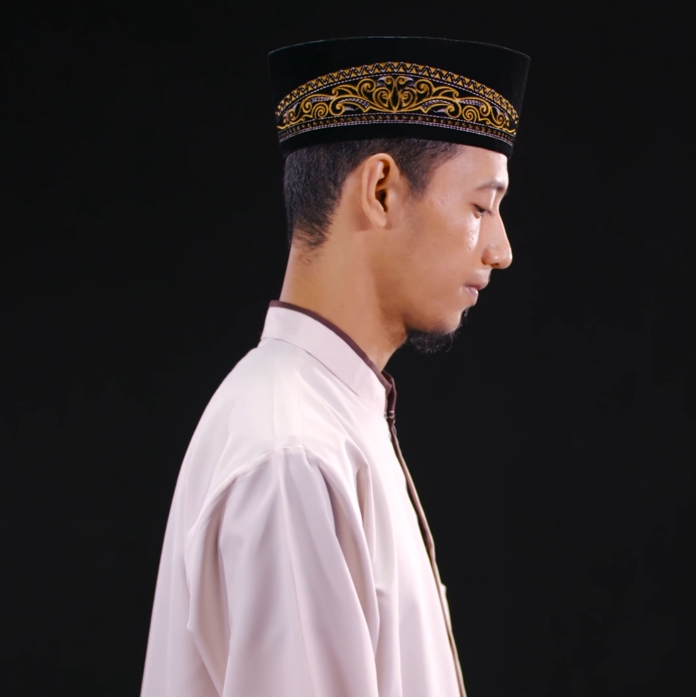 1234 - Gerakan mengangkat kedua tangan, bersamaan dengan mengucapkan kalimat takbir الله أكبر (takbiratul ihram)
Catatan:Mengangkat tangan ketika shalat terdapat pada empat tempat, yaitu pada saat takbiratul ihram, saat hendak rukuk, saat iktidal (bangun dari rukuk), dan saat bangun dari rakaat kedua (selesai tasyahud awal untuk berdiri meneruskan rakaat ketiga.
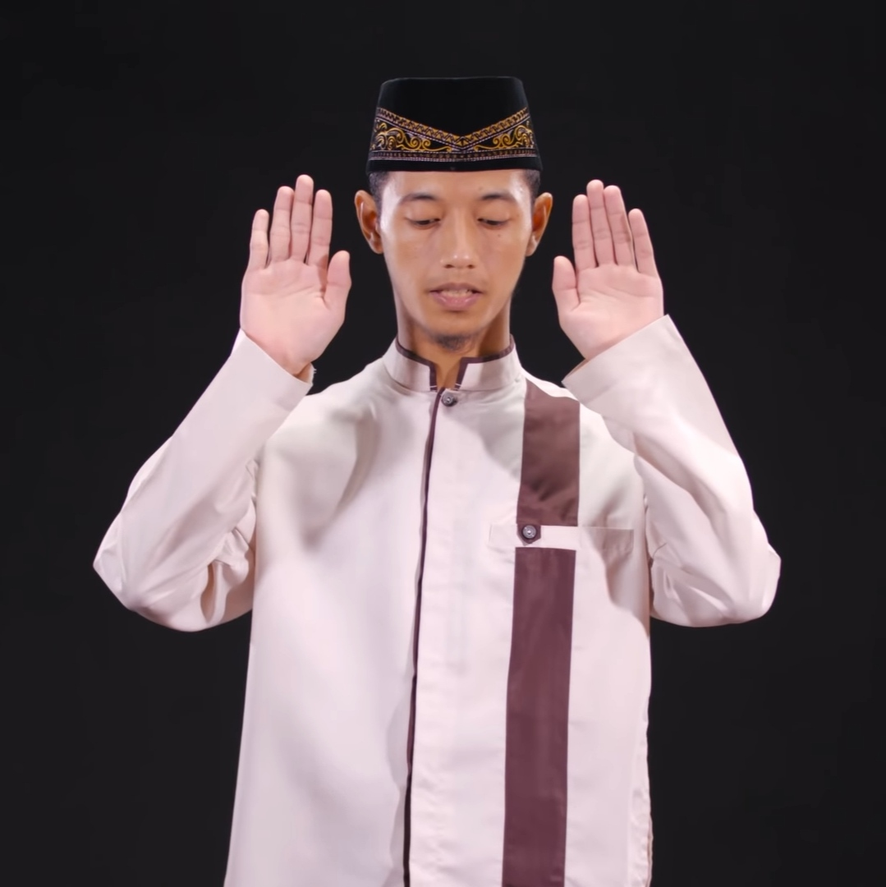 1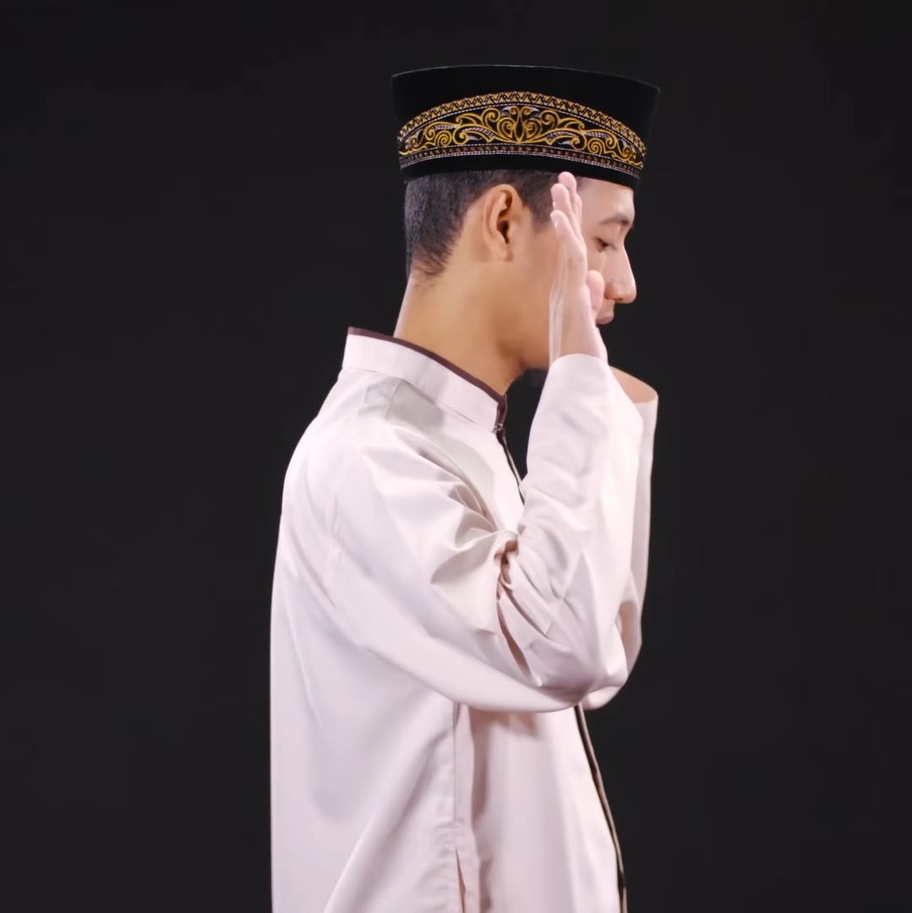 2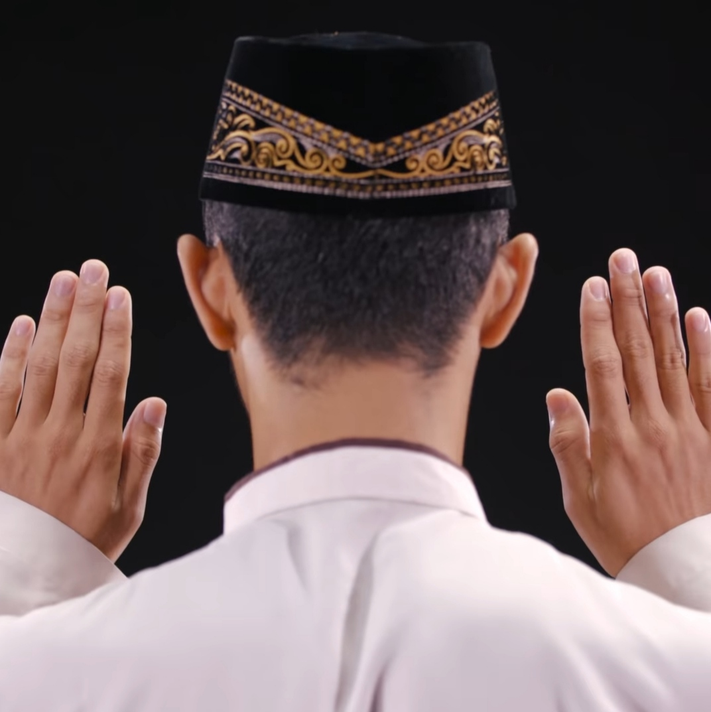 3 -
Gerakan sedekap dalam shalat dilakukan sesudah mengangkat tangan takbiratul ihram. Adapun caranya adalah sebagi berikut:
- Telapak tangan kanan diletakan di atas pergelangan tangan kiri, tidak digenggam.
- Meletakan tangan boleh di dada. Boleh juga meletakan diatas pusar. Boleh juga meletakannya dibawah pusar.
Ketika bersedekap, do'a yang pertama dibaca adalah do'a iftitah. Setelah selesai do'a iftitah, kemudian membaca surat Al-Fatihah, lanjut membaca surat lain (disini akan dibacakan qur'an surat Annas).
اللهُ اَكْبَرُ كَبِرًا وَالْحَمْدُ لِلهِ كَثِيْرًا وَسُبْحَانَ اللهِ بُكْرَةً وَاَصِيْلًا اِنِّى وَجَّهْتُ وَجْهِيَ لِلَّذِيْ فَطَرَالسَّمَاوَاتِ وَالْااَرْضَ حَنِيْفًا مُسْلِمًا وَمَا اَنَا مِنَ الْمُشْرِكِيْنَ اِنَّ صَلَاتِيْ وَنُسُكِيْ وَمَحْيَايَ وَمَمَاتِيْ لِلهِ رَبِّ الْعَا لَمِيْنَ لاَ شَرِيْكَ لَهُ وَبِذَ لِكَ اُمِرْتُ وَاَنَ مِنَ الْمُسْلِمِيْنَ
"Alloohu akbar Kabiroo Wal hamdu lillaahi Katsiiroo, Wa Subhaanalloohi Bukrotan Wa'asyiilaa. Innii Wajjahtu Wajhiya Lilladzii Fathoros Samaawaati Wal Ardho Haniifan Musliman Wa maa Anaa Minal Musyrikiin. Inna Syolaatii Wa Nusukii Wa Mahyaa ya Wa Mamaatii Lillaahi Robbil 'Aalamiina. Laa Syariika lahu Wa Bidzaalika Umirtu Wa Ana Minal Muslimiin."
Artinya : Allah Maha Besar dengan sebesar-besarnya, segala puji hanya bagi Allah dengan pujian yang sangat banyak. Maha Suci Allah di waktu pagi dan petang. Sungguh aku hadapkan wajahku kepada Allah yang telah menciptakan langit dan bumi dengan segenap kepatuhan atau tunduk, dan aku tidak termasuk dari golongan orang-orang yang menyekutukan-Nya. Sungguh sholatku, ibadahku, hidupku matiku hanyalah untuk Allah Tuhan alam Semesta, yang tidak punya sekutu bagi-Nya. Dengan demikian itulah aku diperintahkan. Dan aku adalah termasuk orang-orang muslim (Orang-orang yang berserah diri). (HR. Muslim, No. 185)
Membaca surat Al-Fatihah
بِسْمِ اللّٰهِ الرَّحْمٰنِ الرَّحِيْمِ - ١اَلْحَمْدُ لِلّٰهِ رَبِّ الْعٰلَمِيْنَۙ - ٢الرَّحْمٰنِ الرَّحِيْمِۙ - ٣ مٰلِكِ يَوْمِ الدِّيْنِۗ - ٤اِيَّاكَ نَعْبُدُ وَاِيَّاكَ نَسْتَعِيْنُۗ - ٥ اِهْدِنَا الصِّرَاطَ الْمُسْتَقِيْمَ ۙ - ٦ صِرَاطَ الَّذِيْنَ اَنْعَمْتَ عَلَيْهِمْ ەۙ غَيْرِ الْمَغْضُوْبِ عَلَيْهِمْ وَلَا الضَّاۤلِّيْنَ ࣖ - ٧
bismillāhir-raḥmānir-raḥīm al-ḥamdu lillāhi rabbil-‘ālamīn ar-raḥmānir-raḥīm māliki yaumid-dīn iyyāka na’budu wa iyyāka nasta’īn ihdinaṣ-ṣirāṭal-mustaqīm ṣirāṭallażīna an’amta ‘alaihim gairil-magḍụbi ‘alaihim wa laḍ-ḍāllīn
Dengan menyebut nama Allah Yang Maha Pengasih lagi Maha Penyayang. Segala puji bagi Allah, Tuhan semesta alam. Maha Pemurah lagi Maha Penyayang. Yang menguasai di Hari Pembalasan. Hanya Engkaulah yang kami sembah, dan hanya kepada Engkaulah kami meminta pertolongan. Tunjukilah kami jalan yang lurus, (yaitu) Jalan orang-orang yang telah Engkau beri nikmat kepada mereka; bukan (jalan) mereka yang dimurkai dan bukan (pula jalan) mereka yang sesat.
Membaca suran An Nas
قُلْ أَعُوذُ بِرَبِّ النَّاسِ . مَلِكِ النَّاسِ . إِلَهِ النَّاسِ . مِنْ شَرِّ الْوَسْوَاسِ الْخَنَّاسِ . الَّذِي يُوَسْوِسُ فِي صُدُورِ النَّاسِ . مِنَ الْجِنَّةِ وَالنَّاسِ
Qul a’uudzu birobbinnaas. Malikin naas. Ilaahin naas. Min syarril waswaasil khonnaas. Alladzii yuwaswisu fii shuduurin naas, minal jinnati wan naas
Artinya: Katakanlah: “Aku berlindung kepada Tuhan (yang memelihara dan menguasai) manusia. Raja manusia. Sembahan manusia. Dari kejahatan (bisikan) syaitan yang biasa bersembunyi, yang membisikkan (kejahatan) ke dalam dada manusia, dari (golongan) jin dan manusia."
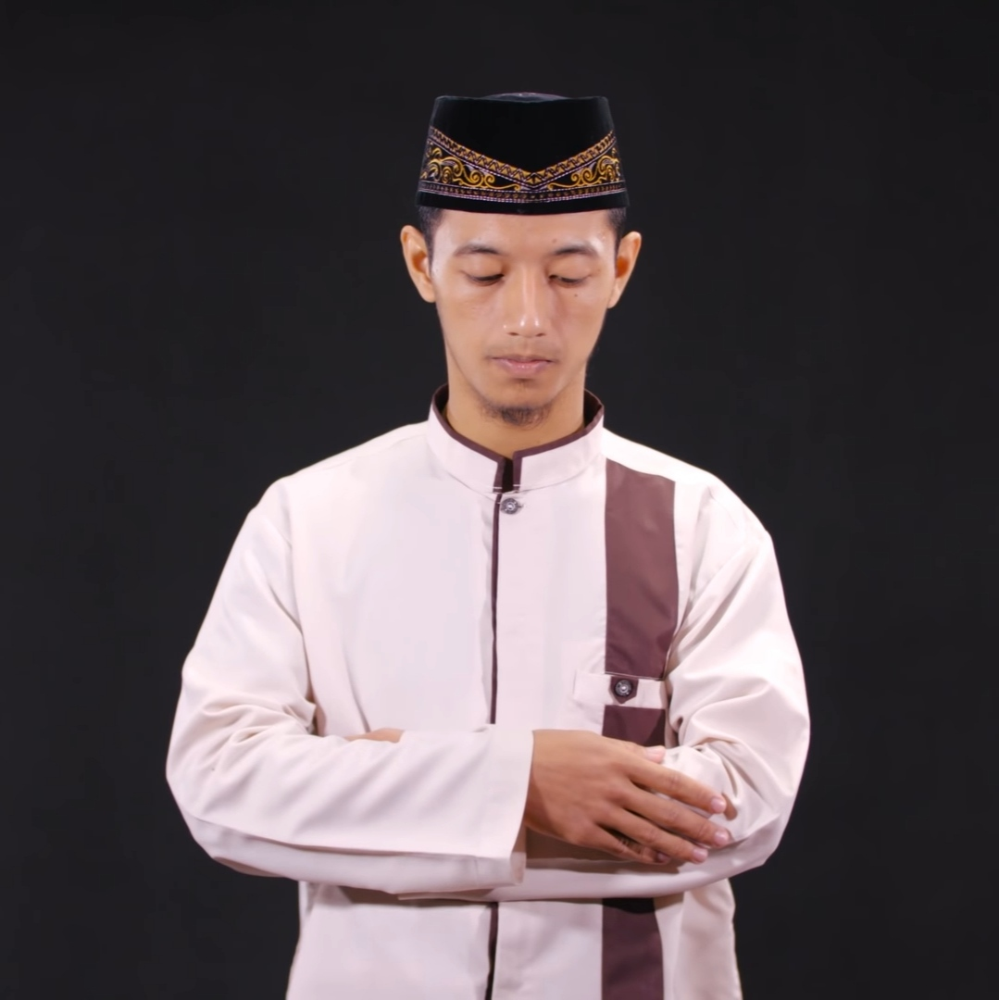 123 -
Rukuk
Setelah selesai membaca surah lalu mengangkat kedua tangan sejajar dengan telinga seraya membaca "Allahu Akbar". Diteruskan dengan badan membungkuk dengan punggung lurus sejajar (rata antara kepala sampai pantat) dan kedua tangannya memegang lutut.
Bila sudah cukup sempurna, kemudian baca tasbih.سُبْحَانَ رَبِّىَ الْعَظِيْمِ وَبِحَمْدِهِ
"Subhaana rabbiyal 'adhiimi wabihamdihi (3x)"
Artinya: "Maha suci Tuhanku yang Maha Agung dan segala puji bagi-Nya".
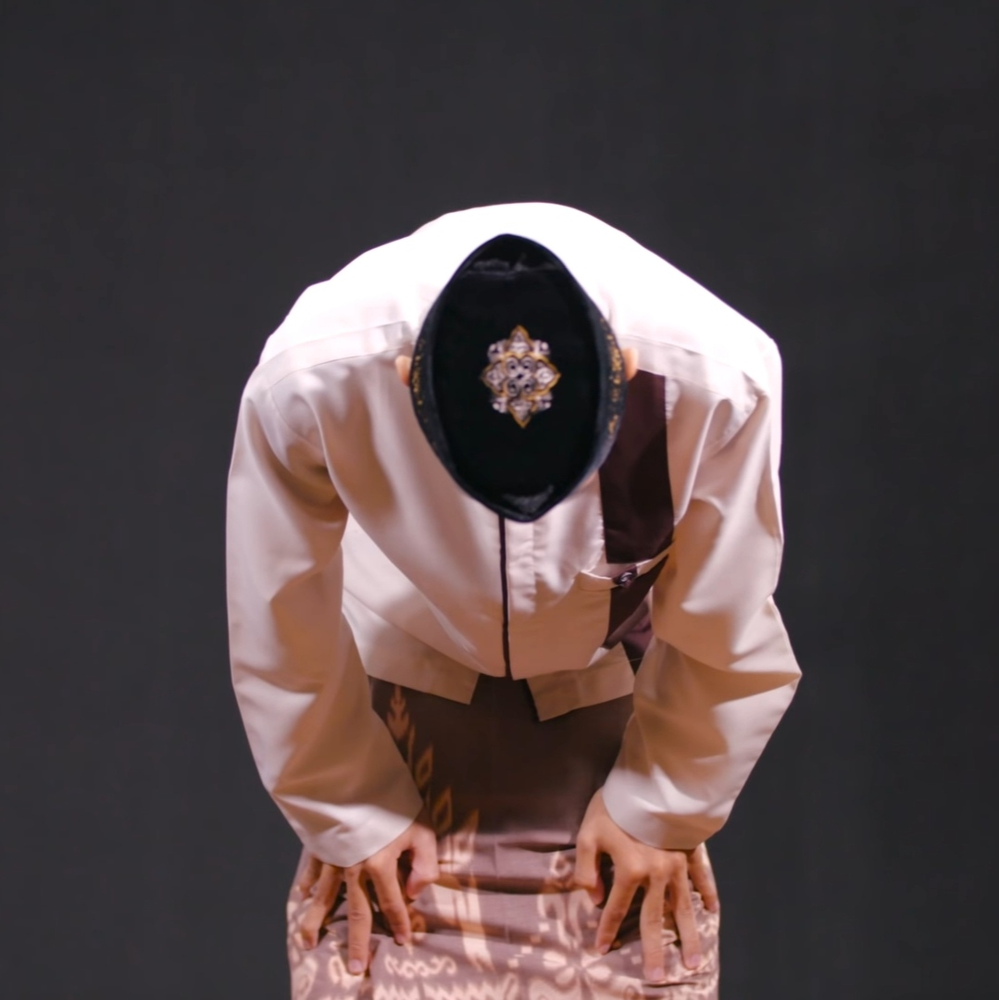 1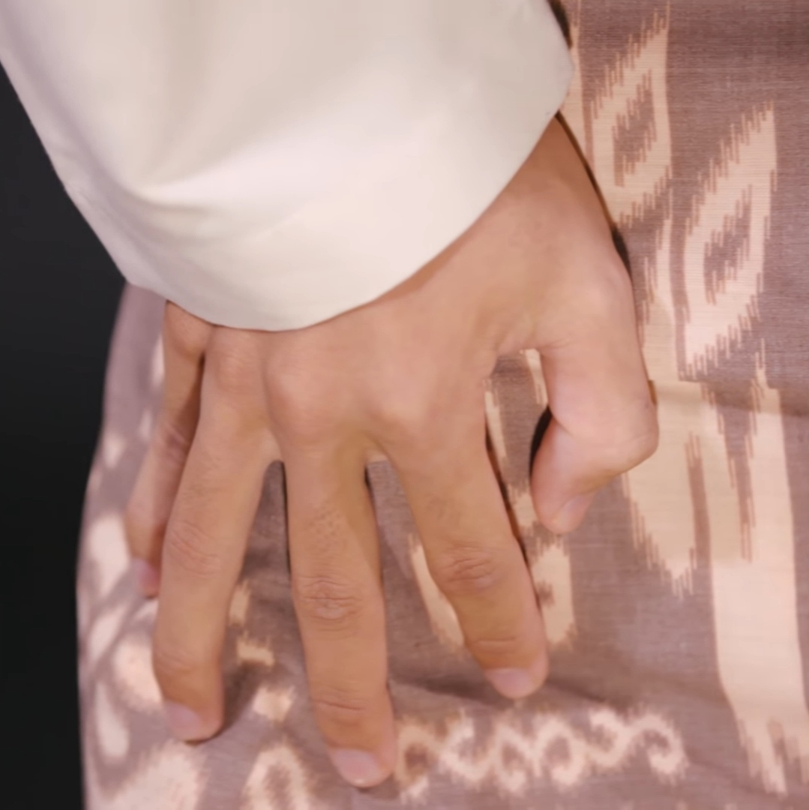 234 -
Iktidal
Setelah tiga kali membaca "Subhaana rabbiyal 'adhiimi wabihamdihi (3x)" terus bangkit dengan mengangkat kedua tangan dan membaca.
سَمِعَ اللهُ لِمَنْ حَمِدَهُ•رَبَّنَا لَكَ الْحَمْدُ مِلْءَ السَّمَوَاتِ وَمِلْءَ الْأَرْضِ وَمِلْءَ مَا شِئْتَ مِنْ شَيْءٍ بَعْدُ
"Sami Allahu liman hamidah • Rabbana lakal-hamdu mil'us-samaawaati wa mil-ul-ardhi wa mil'u maa syi'ta min sya'in ba'du."
Artinya: "Allah mendengar orang-orang yang memuji-Nya. • Ya Allah Tuhan kami! Bagi-Mu segala puji, sepenuh langit dan bumi, dan sepenuh barang yang Engkau kehendaki sesudah itu."
222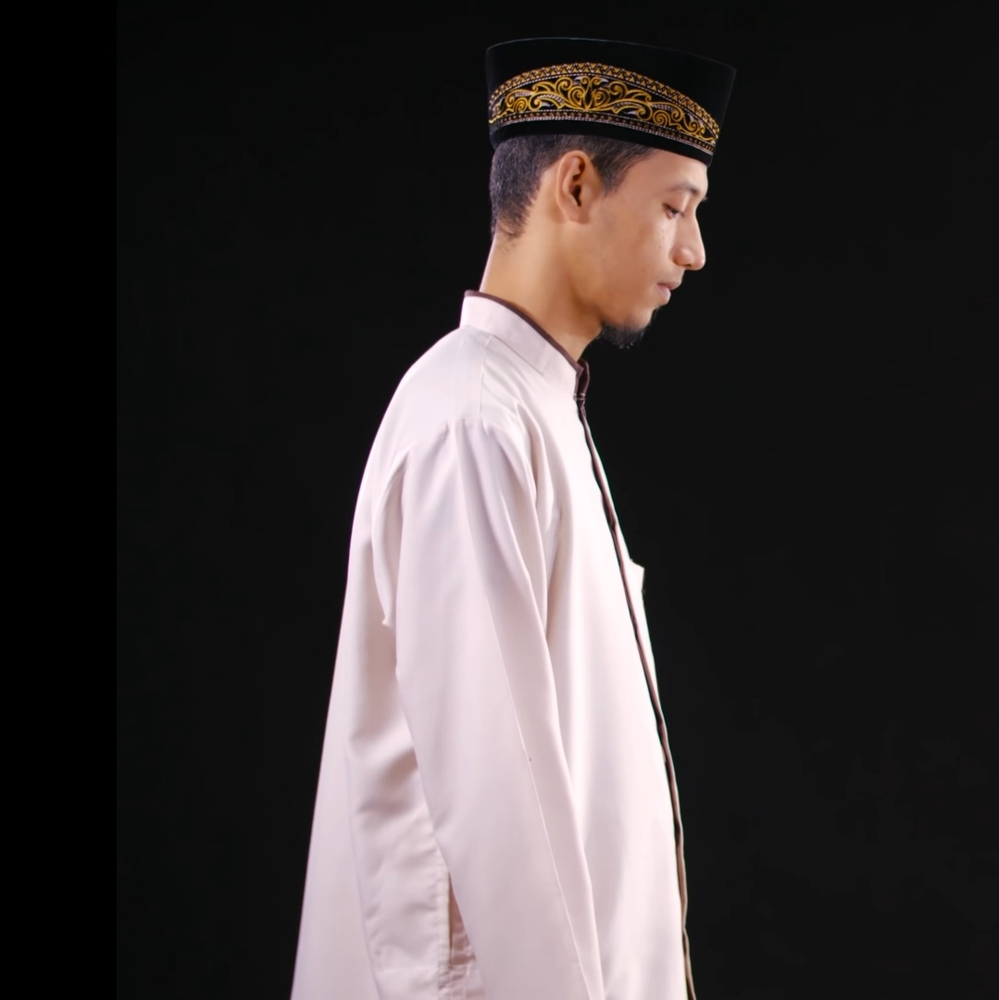 2 -
Sujud
Cara melakukan sujud adalah dengan menurunkan badan dari posisi iktidal, dimulai dengan menekuk lutut serta meletakan wajah (kening dan hidung), dua telapak tangan dua lutut, dan dua ujung telapak kaki sambil mengucapkan takbir "Allahu Akbar". Dan pada saat sujud membaca do'a sebagai berikut:
سُبْحَانَ رَبِّيَ الْأَعْلَى وَبِحَمْدِهِ
"Subhaana robbiyal a’laa wa bihamdih."
Artinya, “Mahasuci Rabb-ku Yang Mahatinggi, dan memujilah aku kepada-Nya.”
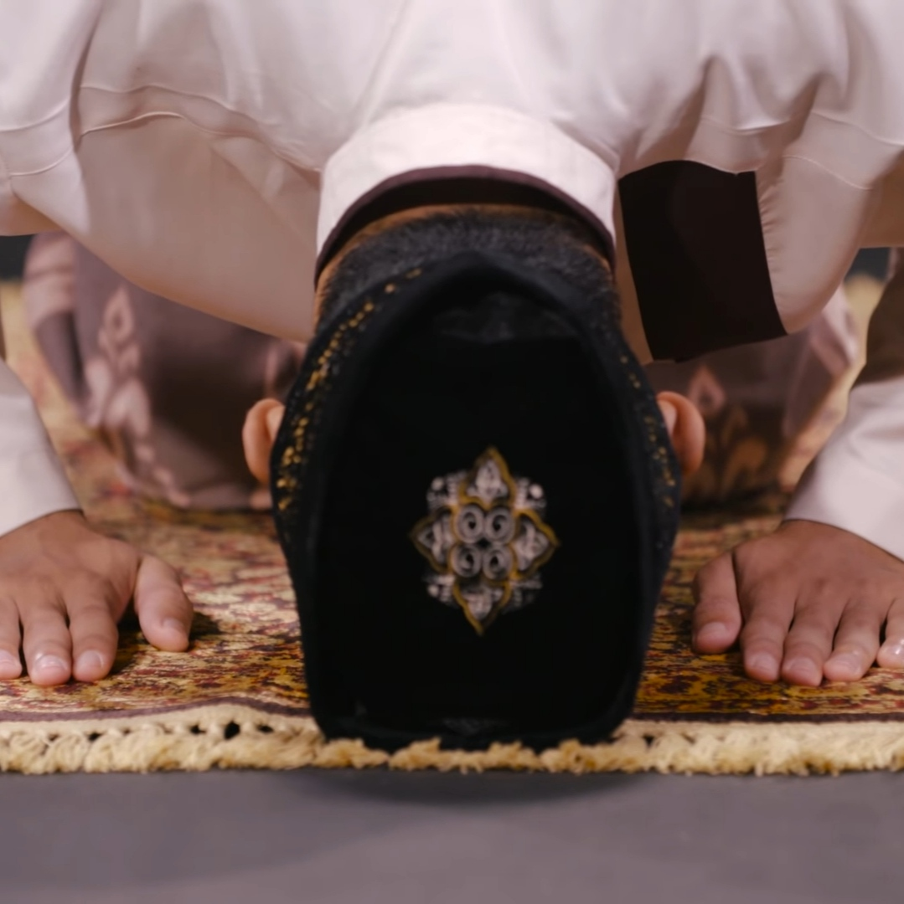 1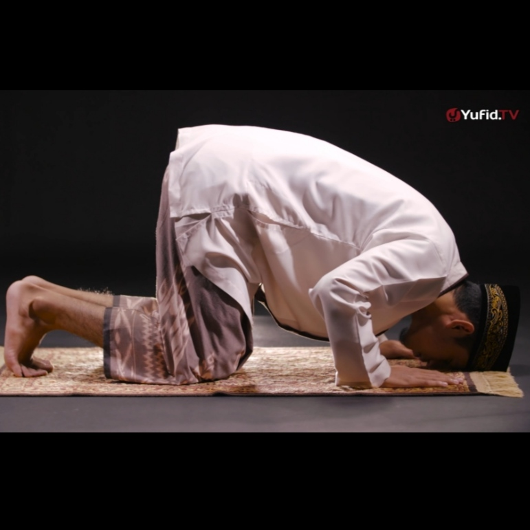 2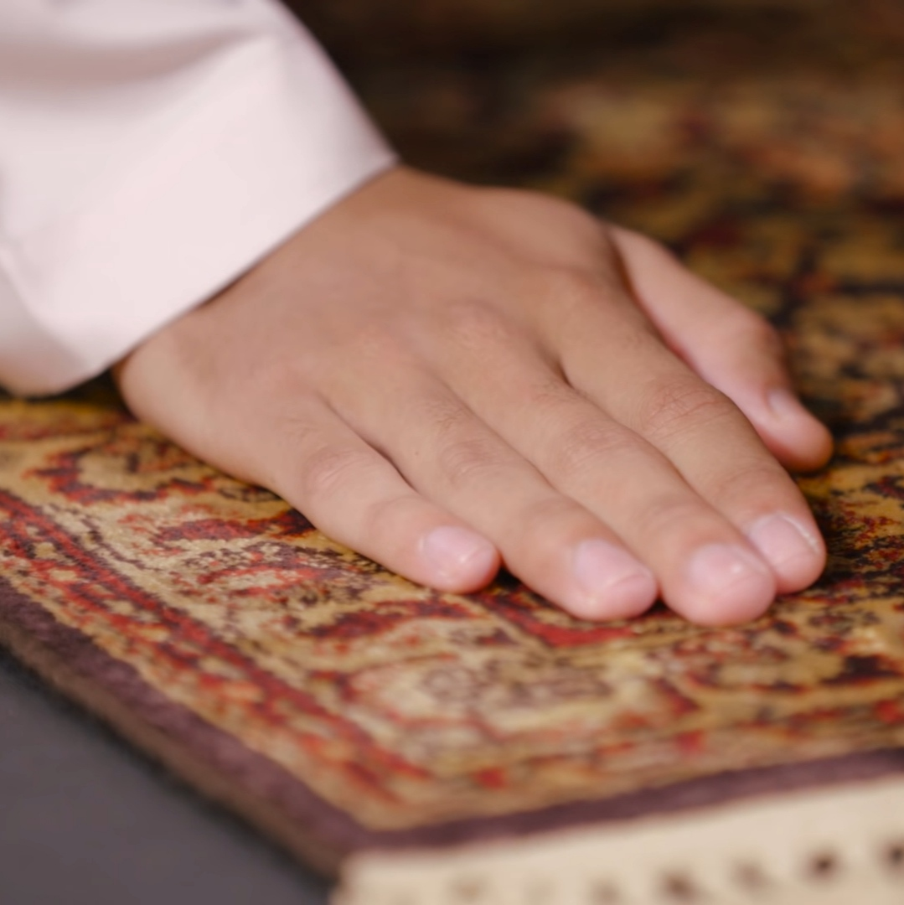 3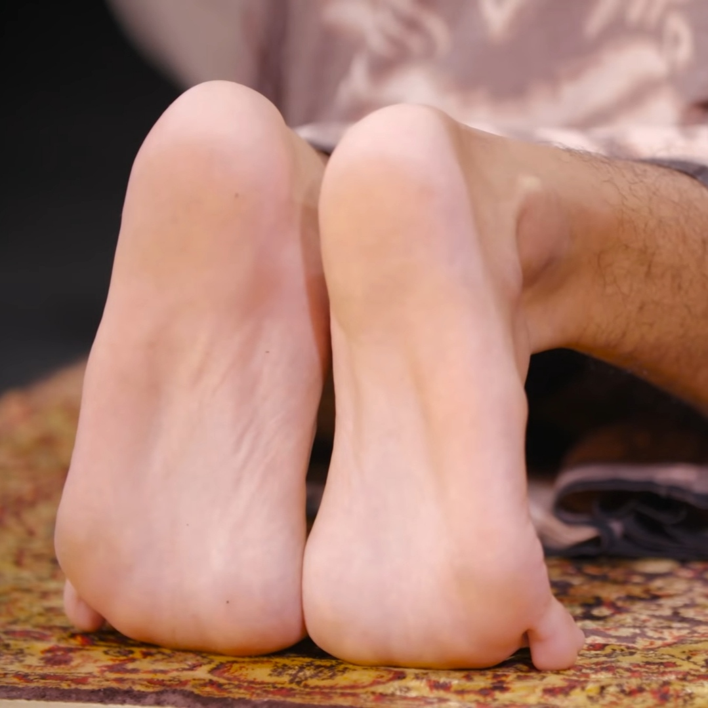 4 -
Duduk Antara Dua Sujud (iftirasy)
Bangkit dari sujud pertama sambil mengucapkan takbir, telapak kaki kiri dibuka dan diduduki, tangan sejajar dengan paha, setelah posisi tumakninah, baru kemudian membaca salah satu do'a antara dua sujud.
رب اغْفِرلي وَارْحَمْنِى واجبرني وَارْفَعْنِي وَارْزُقْنِى وَاهْدِنِى وَعَافِنِى وَاعْفُ عَنِّى
"Robbighfirlii warhamnii wajburnii warfa'nii warzuqnii wahdinii wa'aafinii wa'fu 'annii."
Artinya, "Ya Allah ampunilah aku, rahmatilah aku, perbaikilah keadaanku, tinggikanlah derajatku, berilah rezeki, dan petunjuk untukku."
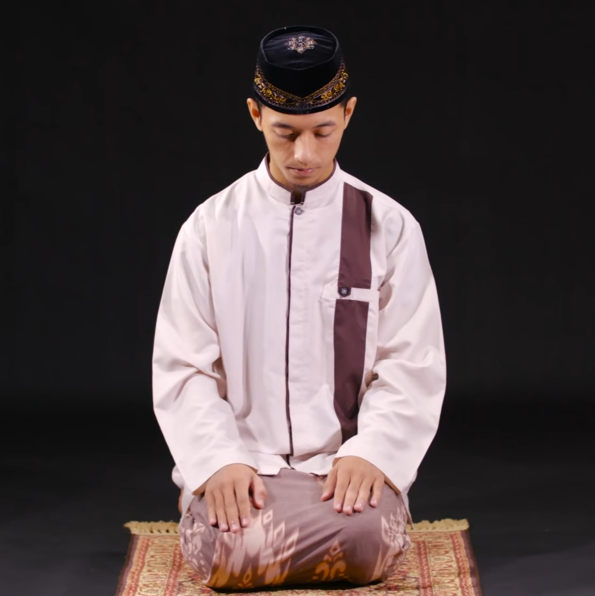 1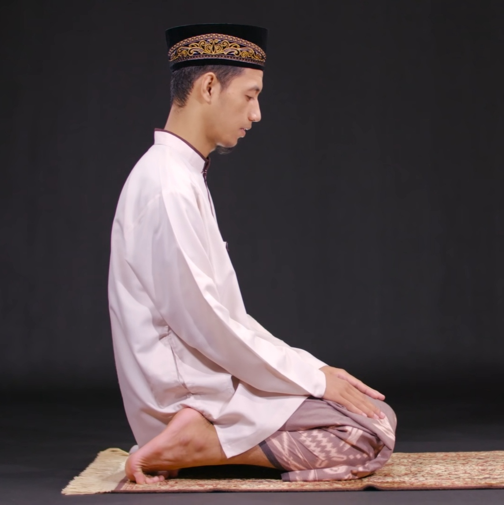 2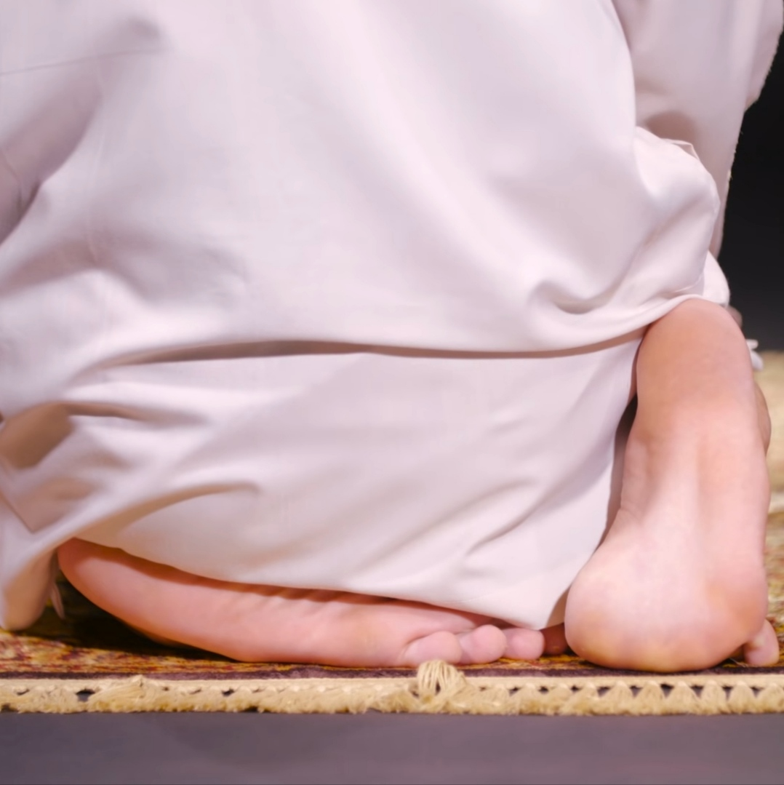 34 -
Sujud kedua
Sujud kedua, ketiga dan keempat dilakukan seperti halnya sujud pertama. Baik acaranya maupun bacaannya.
-
Tasyahud (Tahiyat) Awal
Duduk Tasyahud awal, sama seperti duduk antara dua sujud. Ini pada shalat yang lebih dua rakaat yaitu pada shalat dzuhur, ashar, maghrib, dan isya. Caranya adalah sebagai berikut:
Bangkit dari sujud kedua rakaat kedua sambil membaca takbir dan disunnahkan telapak tangan kanan digenggam serta memberi isyarat dengan telunjuk, yaitu telunjuk diangkat (menunjuk pada saat membaca do'a tasyahud).التَّحِيَّاتُ الْمُبَارَكَاتُ الصَّلَوَاتُ الطَّيِّبَاتُ لِلَّهِ السَّلاَمُ عَلَيْكَ أَيُّهَا النَّبِىُّ وَرَحْمَةُ اللَّهِ وَبَرَكَاتُهُ السَّلاَمُ عَلَيْنَا وَعَلَى عِبَادِ اللَّهِ الصَّالِحِينَ أَشْهَدُ أَنْ لاَ إِلَهَ إِلاَّ اللَّهُ وَأَشْهَدُ أَنَّ مُحَمَّدًا رَسُولُ اللَّهِاَ . للَّهُمَّ صَلِّ عَلىَ مُحَمَّدٍ
"Attahiyyaatul mubaarokaatush sholawaatuth thoyyibaatu lillaah. Assalaamu 'alaika ayyuhan nabiyyu wa rohmatullahi wa barokaatuh. Assalaaamu'alainaa wa 'alaa 'ibaadillaahish shoolihiin. Asyhadu allaa ilaaha illallah wa asyhadu anna Muhammadar rosuulullah. Allahumma sholli 'alaa Muhammad."
Artinya: "Segala penghormatan, keberkahan, salawat dan kebaikan hanya bagi Allah. Semoga salam sejahtera selalu tercurahkan kepadamu wahai nabi, demikian pula rahmat Allah dan berkah-Nya dan semoga salam sejahtera selalu tercurah kepada kami dan hamba-hamba Allah yang saleh. Aku bersaksi bahwa tiada tuhan kecuali Allah dan aku bersaksi bahwa Muhammad adalah utusan Allah. Ya Allah, berilah rahmat kepada Nabi Muhammad."
1234 -
Tasyahud Akhir
Tasyahud Akhir adalah duduk tawaruk. Caranya seperti tasyahud awal dan ditambah dengan telapak kaki kiri dimasukan kebawah kaki kanan. Pantat duduk menyentuh lantai. Telapak kaki kanan tegak. Kemudian telunjuk diangkat (menunjuk). Dalam posisi ini kemudian membaca tasyahud, shalawat atas keluarga Nabi, dan dan disunnahkan membaca do'a tasyahud akhir (shalawat Ibrahimiyah).
التَّحِيَّاتُ الْمُبَارَكَاتُ الصَّلَوَاتُ الطَّيِّبَاتُ لِلَّهِ السَّلاَمُ عَلَيْكَ أَيُّهَا النَّبِىُّ وَرَحْمَةُ اللَّهِ وَبَرَكَاتُهُ السَّلاَمُ عَلَيْنَا وَعَلَى عِبَادِ اللَّهِ الصَّالِحِينَ أَشْهَدُ أَنْ لاَ إِلَهَ إِلاَّ اللَّهُ وَأَشْهَدُ أَنَّ مُحَمَّدًا رَسُولُ اللَّهِاَ . للَّهُمَّ صَلِّ عَلىَ مُحَمَّدٍ
وَعَلَى آلِ مُحَمَّدٍ ، كَمَا صَلَّيْتَ عَلَى إِبْرَاهِيمَ وَعَلَى آلِ إِبْرَاهِيمَ ، إِنَّكَ حَمِيدٌ مَجِيدٌ ، اللَّهُمَّ بَارِكْ عَلَى مُحَمَّدٍ ، وَعَلَى آلِ مُحَمَّدٍ ، كَمَا بَارَكْتَ عَلَى إِبْرَاهِيمَ ، وَعَلَى آلِ إِبْرَاهِيمَ ، إِنَّكَ حَمِيدٌ مَجِيدٌ
"Attahiyyaatul mubaarokaatush sholawaatuth thoyyibaatu lillaah. Assalaamu 'alaika ayyuhan nabiyyu wa rohmatullahi wa barokaatuh. Assalaaamu'alainaa wa 'alaa 'ibaadillaahish shoolihiin. Asyhadu allaa ilaaha illallah wa asyhadu anna Muhammadar rosuulullah. Allahumma sholli 'alaa Muhammad."
"Aallaahumma shalli'alaa muhammad, wa'alaa aali muhammad. kamaa shallaita alaa ibraahiim wa alaa aali ibraahiim. Wabaarik'alaa muhammad wa alaa aali muhammad. kamaa baarakta alaa ibraahiim wa alaa aali ibraahiim, fil'aalamiina innaka hamiidum majiid."
Artinya: "Segala penghormatan, keberkahan, salawat dan kebaikan hanya bagi Allah. Semoga salam sejahtera selalu tercurahkan kepadamu wahai nabi, demikian pula rahmat Allah dan berkah-Nya dan semoga salam sejahtera selalu tercurah kepada kami dan hamba-hamba Allah yang saleh. Aku bersaksi bahwa tiada tuhan kecuali Allah dan aku bersaksi bahwa Muhammad adalah utusan Allah. Ya Allah, berilah rahmat kepada Nabi Muhammad."
Artinya: "Ya Allah, limpahi lah rahmat atas keluarga Nabi Muhammad, seperti rahmat yang Engkau berikan kepada Nabi Ibrahim dan keluarganya. Dan limpahi lah berkah atas Nabi Muhammad beserta para keluarganya, seperti berkah yang Engkau berikan kepada Nabi Ibrahim dan keluarganya, Engkau lah Tuhan yang sangat terpuji lagi sangat mulia diseluruh alam."
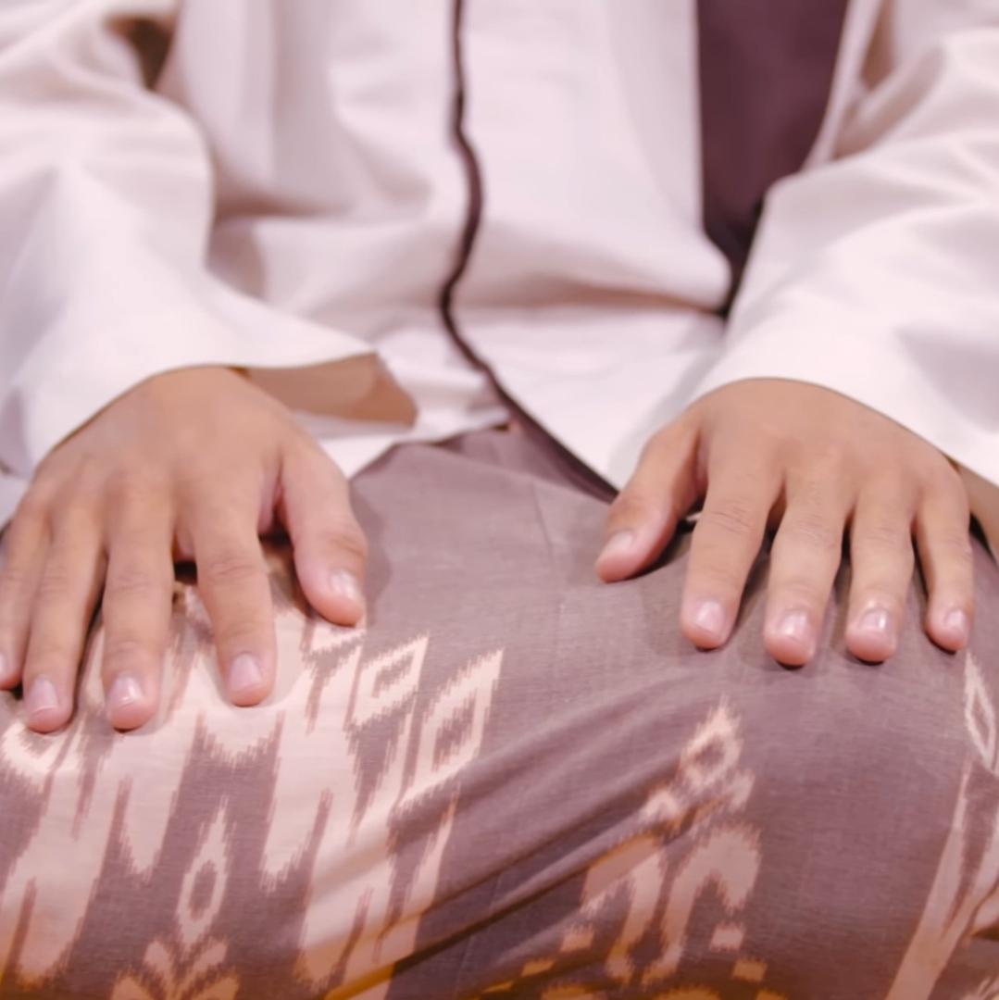 1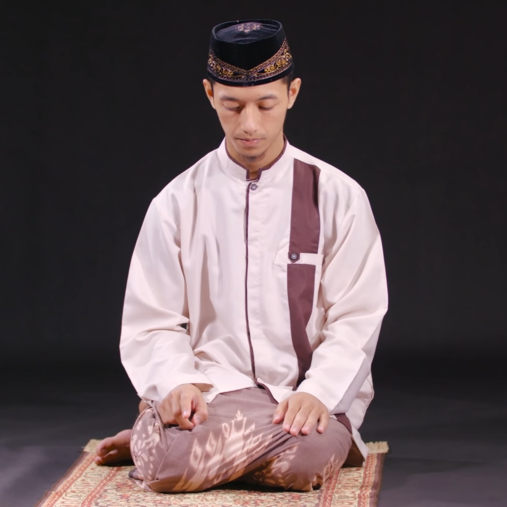 2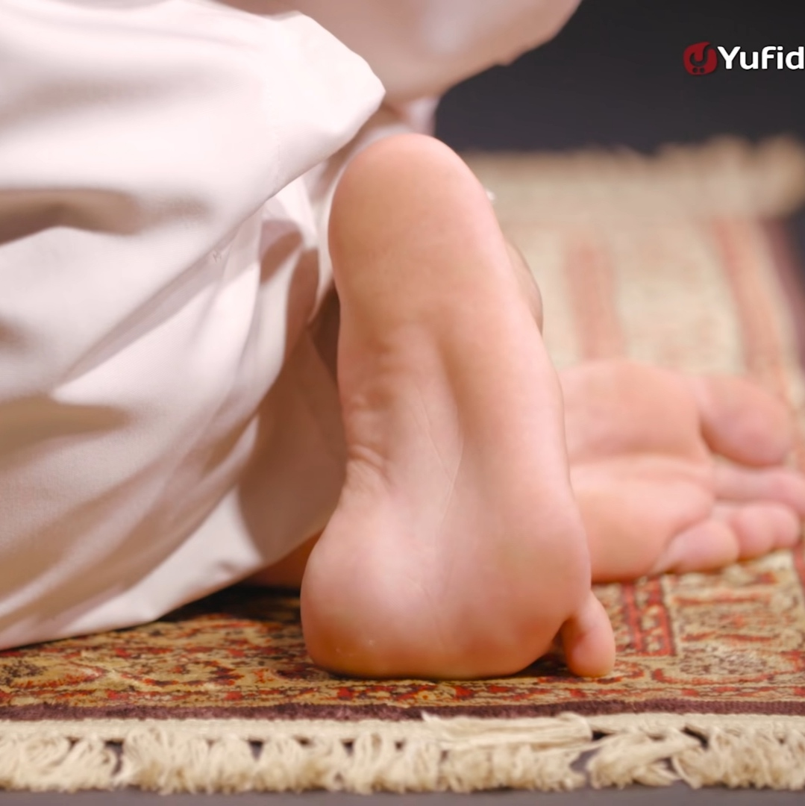 3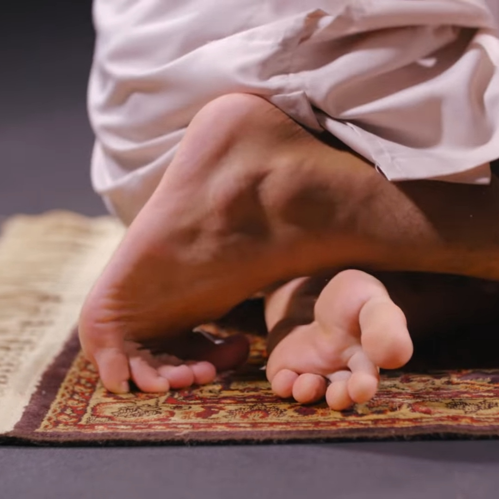 4 -
Salam
Setelah membaca tahiyat akhir, maka selanjutnya mengucapkan salam sambil menolehkan kepala ke kanan dan kiri.
السَّلاَمُ عَلَيْكُمْ وَرَحْمَةُ اللهِ
"Assalaamu alaikum wa rahmatullah."
Artinya: "Semoga keselamatan dan rahmat Allah dilimpahkan kepadamu."
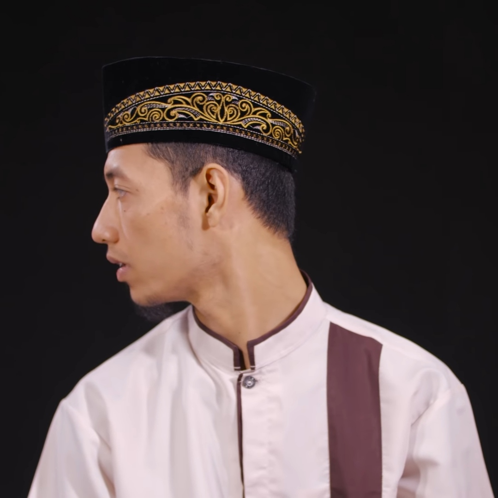 12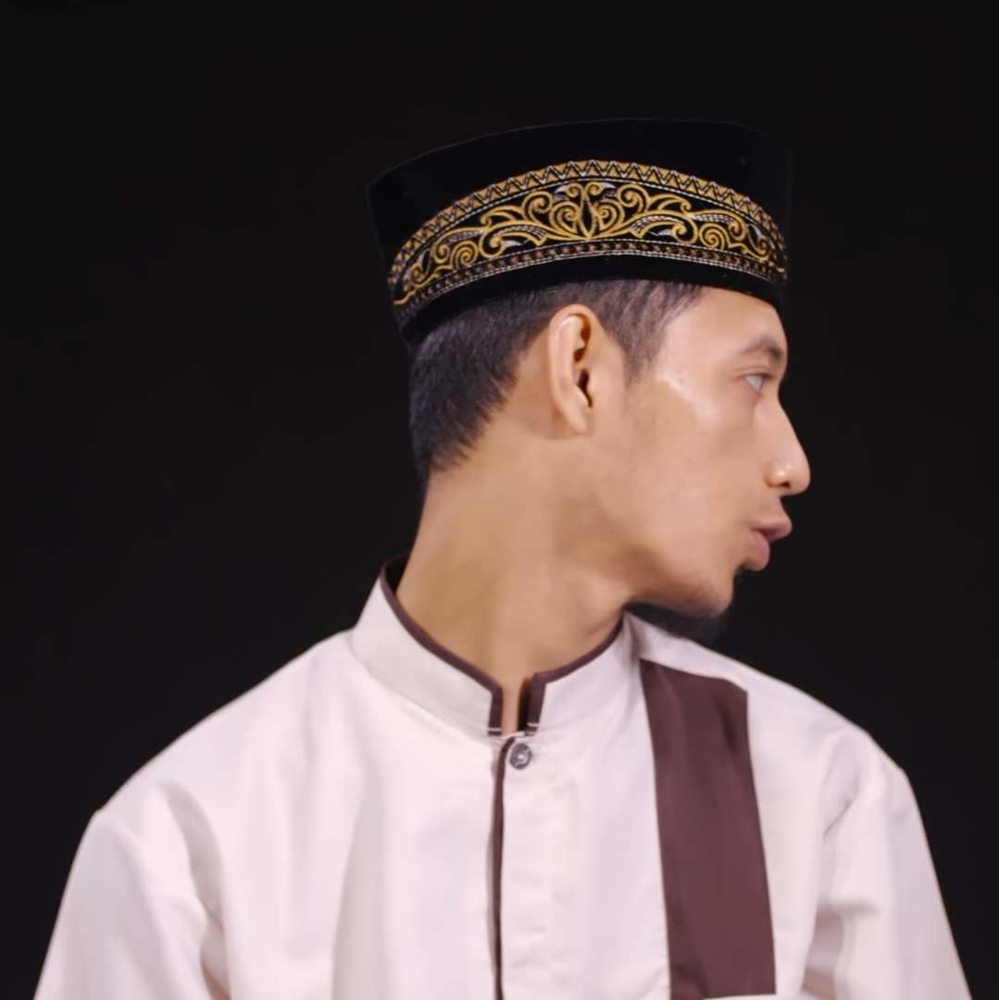 34
-